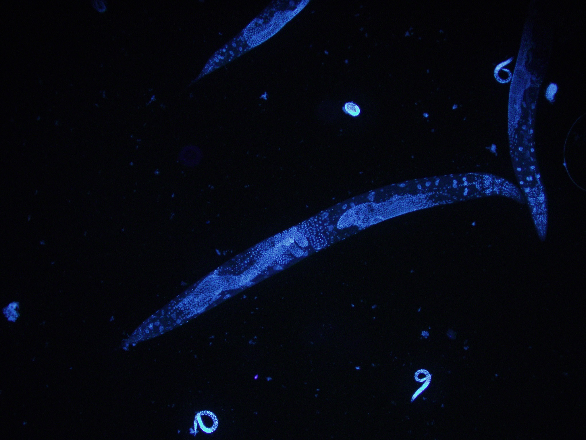

Nutraceutical Discovery
Preclinical screening of botanicals, biotics, extracts, and functional ingredients. The job: find a defensible biological story — the one that earns a product its position on the shelf.
Mohammed Adnan Qureshi — PhD, Quantitative Biology. Discovery Team Lead at NemaLife Inc. I turn preclinical biology into commercial decisions for nutraceutical and functional-ingredient brands.
10+ years in molecular and aging biology · 55+ client engagements · 2 NIH SBIRs as PI · Nature Aging co-author.
I'm a translational scientist and research team leader. For 10+ years I've worked at the interface of molecular biology, aging research, and product development — turning preclinical signals into ingredient strategy for the healthy-longevity industry.
Co-author of Nature Aging research on autophagy, mitophagy, metabolic stress resilience, sarcopenia, and epigenetic aging. Lead interdisciplinary teams, manage industry-academic partnerships, and have delivered 55+ translational projects that move ingredients from discovery to commercial positioning.
Toolkit: C. elegans lifespan/healthspan assays, transcriptomics (DESeq2, RNA-Seq), pathway enrichment analysis, and mechanism-of-action storytelling for scientific and business stakeholders. 2-for-2 on NIH SBIR Phase I awards as PI.
Preclinical screening of botanicals, biotics, extracts, and functional ingredients. The job: find a defensible biological story — the one that earns a product its position on the shelf.
BioSeq is the in-house pipeline I built — it turns C. elegans transcriptomic data into human-relevant outputs: health domains, candidate genes, pathways, and mechanism of action. Ingredient screen to decision support, compressed.
Mitochondrial stress responses (UPRmt), energy metabolism, host-pathogen interactions. Five years of doctoral work in the Pellegrino lab — the foundational science under everything else here.
Outcomes from industry partnerships and internal R&D programs at NemaLife. Specific client identities and proprietary details are omitted under NDA; the outcomes and methodologies below are disclosable.
Led preclinical efficacy screening of a multi-strain postbiotic formulation; identified one strain outperforming the proposed combination. Client redirected clinical strategy around the winner, completed the trial, and brought the ingredient to market.
Screened a curated library of pro-longevity candidates and assembled a combination targeting cellular resilience, healthy longevity, and metabolic health. Asset is patent-pending and positioned for commercial partnering.
Uncovered gut-muscle axis activity through whole-organism transcriptomic profiling and healthspan assays. Client is now commercializing the ingredient in a new health vertical.
Generated mechanistic differentiation through whole-organism transcriptomics and pathway-level analysis (BioSeq platform). The data package supported the client's patent application.
Co-authored a peer-reviewed study (Experimental Gerontology) showing the extract improves survival, motility, and oxidative-stress resistance in C. elegans. Data informed the client's product positioning and commercialization narrative.
Designed and ran preclinical screens that surfaced new health domains for proprietary strains. Outputs informed strain positioning and the design of follow-on clinical trials.

Experimental Gerontology, 113180, 2026
Nature Aging 5 (10), 2003-2021, 2025
Current Developments in Nutrition 9, 2025
The FEBS journal 289 (22), 7014-7037, 2022
Biology Open 10 (5), bio058613, 2021
PLoS pathogens 16 (9), e1008918, 2020
Journal of Biological Chemistry 292 (33), 13500-13506, 2017
NemaLife Inc., Lubbock, TX
Lead the preclinical discovery team. Run 55+ research projects spanning aging biology, metabolic health, and healthspan extension. Build mechanism-of-action narratives by integrating DESeq2 transcriptomics, OrthoList2 ortholog mapping, and Enrichr pathway enrichment (GO, KEGG, Reactome, BioPlanet). Primary scientific contact for industry partners. Secured 2 NIH SBIR Phase I grants as PI.
NemaLife Inc., Lubbock, TX
Built 13 novel healthspan and aging assays, expanding the company's service portfolio. Designed and ran targeted preclinical studies for nutrition clients. Supervised a 10-person research team (4 FTE, 6 part-time). Worked across regulatory, marketing, and product development to translate preclinical data into substantiated health claims.
Biocon Ltd, Bangalore
ACTREC — Tata Memorial Centre, Mumbai
University of Texas at Arlington · Pellegrino Lab
Doctoral research on the mitochondrial unfolded protein response (UPRmt) and mitochondrial stress signaling in C. elegans. 5 peer-reviewed articles including co-first authorship in PLoS Pathogens. Mentored graduate and undergraduate students; two completed Honors dissertations.
Vellore Institute of Technology, India
University of Mumbai, India
Whether it's product positioning, mechanism of action, or AI-driven ingredient discovery — let's talk.